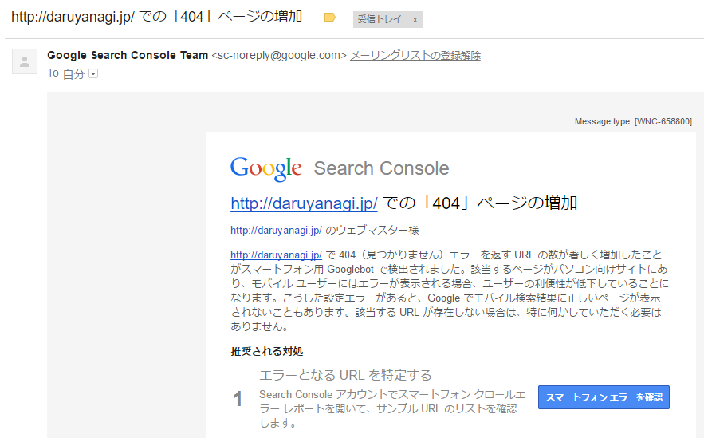
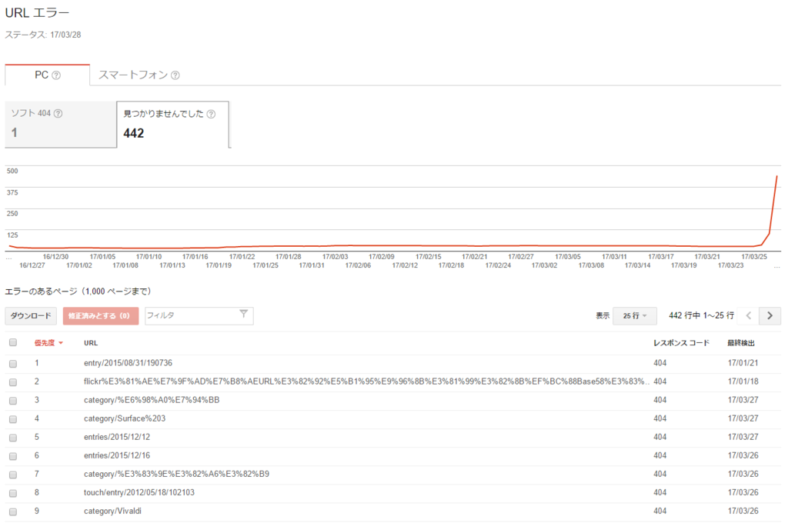
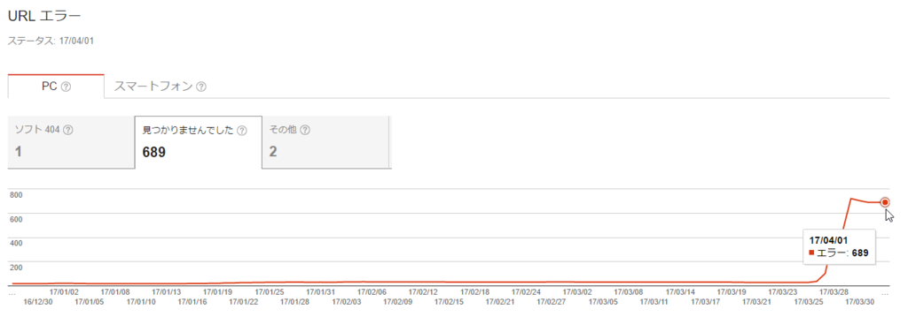

Google Search Console から“「404」ページの増加”というメールが来た
公開日：

(゜レ゜)！

確かにめっちゃ増えてる。これはヤバい。
というわけで、daruyanagi.jp/entry、daruyanagi.jp/archive、daruyanagi.jp/about へのリクエストをそのまま blog.daruyanagi.jp の各ディレクトリへリダイレクトすればよさそう。
はてなブログのドメインを daruyanagi.jp から blog.daruyanagi.jp へ引越しした - だるろぐ
これでは少し足りなかったみたいですね。いろいろ調査した結果
- /entry
- /archive
- /about
- /category
- /entries
- /search
- /touch
- /embed
PC 向けでは下の5つが足りなかったみたいです。同じようなリダイレクトページを足して解決。
- /mobile
- /m
モバイルでこいつらもエラーになるのですが、こいつらはリダイレクトしても はてなブログ でエラーになるので、何かやり方が間違ってるかも。まぁ、いいや。

ちょっとっだけエラー減ってきたかなぁ。当分はこれで様子見です。